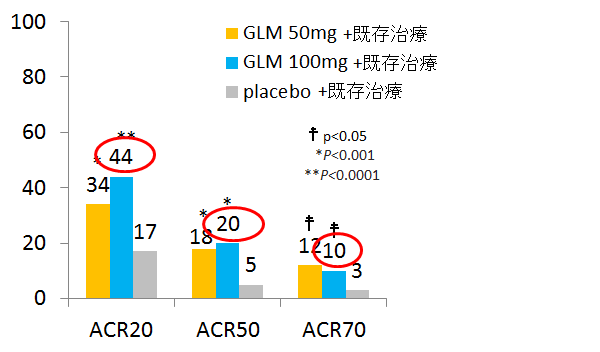
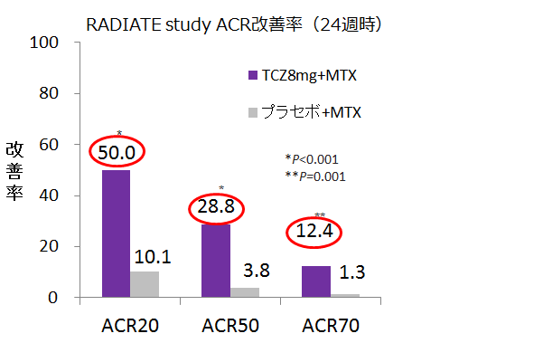

４．SIMは他のTNF阻害薬効果不十分の患者さんにも有効です
TNF既治療例において、SIM100はACT通常量を超える効果は見られていない
GO-AFTER Study（SIM・海外）
- ●海外RAを対象に、プラセボ、SIM50㎎、SIM100㎎を4週間隔で投与する。3割がDMARDs非併用。計461名
GO-AFTER study ACR改善率(24週時）

Smolen JS,et al;Lancet. 2009 Jul 18;374(9685):210-21
RADIATE Study（ACT・海外）
- ●海外RA患者を対象に、TNF効果不十分例に対しプラセボとACT4㎎kgとACT8㎎kgをMTX併用にて4週間隔で投与するRCT。計499名。

Emery P, et al. Ann Rheum Dis 67 :1516-1523, 2008
直接比較はできないものの、TNF既治療例への有効性は、SIM100㎎と比べACT8㎎/kgは高い傾向。
しかも、GO-AFTERは1剤以上のTNF既治療例が対象であるものの、効果不十分例は半数しか含まれていない。
（残りの半数は忍容性や使用感の問題で中止しており、TNF阻害薬への反応性がある患者）